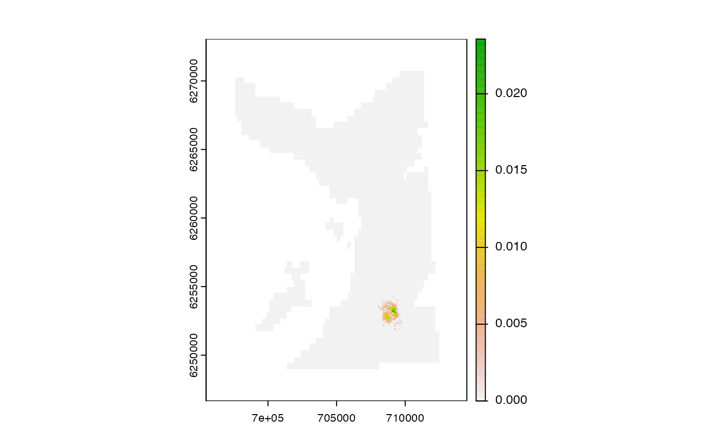
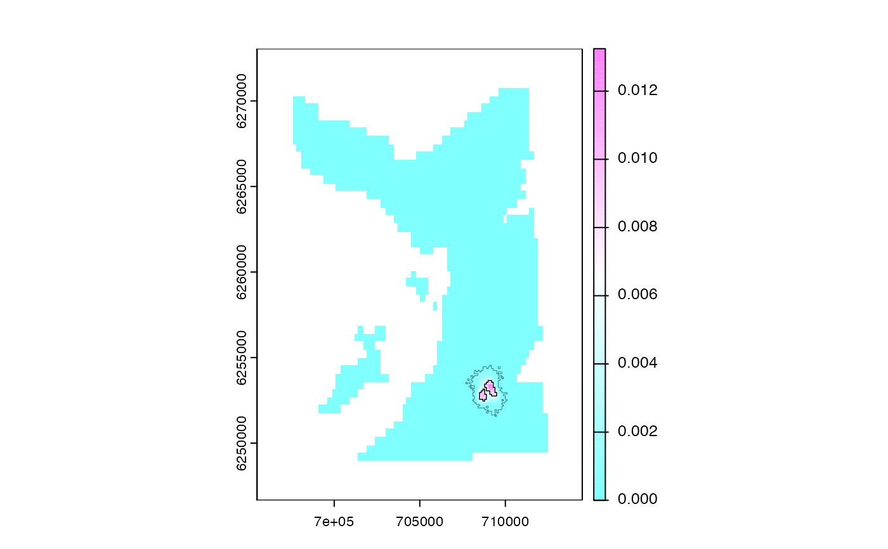

This function builds a 'probability-of-use' utilisation distribution from (processed) particle samples.
pf_map_pou(.history, .bathy, .plot = TRUE, ...)The (processed) particle samples, provided as:
A list of data.tables that define cell samples; i.e., the history element of a pf object. This must contain a column that defines cell samples at each time step named cell_now.
A character string that defines the directory in which particle samples were written (as parquet files).
A SpatRaster that defines the grid for the utilisation distribution. NAs on .bathy are used as a mask.
A logical input that defines whether or not to plot the SpatRaster.
If .plot = TRUE, ... is a place holder for additional arguments passed to terra::plot().
The function returns a SpatRaster (utilisation distribution) in which cell values define probability-of-use.
Probability-of-use is the proportion of samples of each unique cell (out of the total number of samples across all time steps).
The PF (forward simulation) is implemented by pf_forward_*():
pf_forward_1() refines AC-branch algorithm (acs() and dc()) outputs using PF;
pf_forward_2() is an integrated implementation that couples AC- and PF-branch algorithms internally;
PF is supported by:
Setup helpers, namely pf_setup_files();
Template movement models, namely pf_kick();
The backward pass is implemented by pf_backward();
Movement paths are built from PF outputs via pf_path() functions:
pf_path() reconstructs paths;
pf_path_pivot() supports path reconstruction;
To reconstruct maps of space use, see:
pf_coords() to extract particle coordinates;
pf_map_pou() for probability-of-use maps;
pf_map_dens() for smooth utilisation distributions;
get_hr() for home range estimates;
#### Workflow
# A. Define input datasets (see ?`acs_setup_obs()`)
# B. Implement forward simulation (see ?`acs()`, ?`dc()` and ?`pf_forward_*()`)
# C. Implement backwards pass (see ?`pf_backward()`)
# D. Implement `pf_path()`, `pf_map_pou()` etc.
#### Set up examples using pre-defined datasets
# Define required datasets (e.g., observations, bathymetry grid)
obs <- dat_obs()
gebco <- dat_gebco()
# Collect pre-defined particle samples from forward simulation
dat_pff <- dat_pff()
# Implement backwards pass
con <- tempdir()
pfb_folder <- file.path(con, "patter", "pf", "backward")
dir.create(pfb_folder, recursive = TRUE)
out_pfb <- pf_backward(dat_pff$history,
.save_history = TRUE,
.write_history = list(sink = pfb_folder))
#> patter::pf_backward() called (@ 2023-11-24 20:46:51.268057)...
#> ... Time step 50:
#> ... ... Recording (cleaned) outputs for `.history[[50]]`...
#> ... Time step 49:
#> ... ... Cleaning `.history[[48]]`...
#> ... ... Identifying `cell_now` (for the previous step) that match `cell_past` (for the current step)...
#> ... ... ... Input: 1000 rows in `.history[[t]]`...
#> ... ... ... Filtering 34 dead ends (966 remain)...
#> ... ... ... Output: 966 rows in `.history[[t - 1]]`...
#> ... ... Recording (cleaned) outputs for `.history[[49]]`...
#> ... Time step 48:
#> ... ... Cleaning `.history[[47]]`...
#> ... ... Identifying `cell_now` (for the previous step) that match `cell_past` (for the current step)...
#> ... ... ... Input: 966 rows in `.history[[t]]`...
#> ... ... ... Filtering 41 dead ends (959 remain)...
#> ... ... ... Output: 959 rows in `.history[[t - 1]]`...
#> ... ... Recording (cleaned) outputs for `.history[[48]]`...
#> ... Time step 47:
#> ... ... Cleaning `.history[[46]]`...
#> ... ... Identifying `cell_now` (for the previous step) that match `cell_past` (for the current step)...
#> ... ... ... Input: 959 rows in `.history[[t]]`...
#> ... ... ... Filtering 64 dead ends (936 remain)...
#> ... ... ... Output: 936 rows in `.history[[t - 1]]`...
#> ... ... Recording (cleaned) outputs for `.history[[47]]`...
#> ... Time step 46:
#> ... ... Cleaning `.history[[45]]`...
#> ... ... Identifying `cell_now` (for the previous step) that match `cell_past` (for the current step)...
#> ... ... ... Input: 936 rows in `.history[[t]]`...
#> ... ... ... Filtering 57 dead ends (943 remain)...
#> ... ... ... Output: 943 rows in `.history[[t - 1]]`...
#> ... ... Recording (cleaned) outputs for `.history[[46]]`...
#> ... Time step 45:
#> ... ... Cleaning `.history[[44]]`...
#> ... ... Identifying `cell_now` (for the previous step) that match `cell_past` (for the current step)...
#> ... ... ... Input: 943 rows in `.history[[t]]`...
#> ... ... ... Filtering 66 dead ends (934 remain)...
#> ... ... ... Output: 934 rows in `.history[[t - 1]]`...
#> ... ... Recording (cleaned) outputs for `.history[[45]]`...
#> ... Time step 44:
#> ... ... Cleaning `.history[[43]]`...
#> ... ... Identifying `cell_now` (for the previous step) that match `cell_past` (for the current step)...
#> ... ... ... Input: 934 rows in `.history[[t]]`...
#> ... ... ... Filtering 97 dead ends (903 remain)...
#> ... ... ... Output: 903 rows in `.history[[t - 1]]`...
#> ... ... Recording (cleaned) outputs for `.history[[44]]`...
#> ... Time step 43:
#> ... ... Cleaning `.history[[42]]`...
#> ... ... Identifying `cell_now` (for the previous step) that match `cell_past` (for the current step)...
#> ... ... ... Input: 903 rows in `.history[[t]]`...
#> ... ... ... Filtering 15 dead ends (985 remain)...
#> ... ... ... Output: 985 rows in `.history[[t - 1]]`...
#> ... ... Recording (cleaned) outputs for `.history[[43]]`...
#> ... Time step 42:
#> ... ... Cleaning `.history[[41]]`...
#> ... ... Identifying `cell_now` (for the previous step) that match `cell_past` (for the current step)...
#> ... ... ... Input: 985 rows in `.history[[t]]`...
#> ... ... ... Filtering 36 dead ends (964 remain)...
#> ... ... ... Output: 964 rows in `.history[[t - 1]]`...
#> ... ... Recording (cleaned) outputs for `.history[[42]]`...
#> ... Time step 41:
#> ... ... Cleaning `.history[[40]]`...
#> ... ... Identifying `cell_now` (for the previous step) that match `cell_past` (for the current step)...
#> ... ... ... Input: 964 rows in `.history[[t]]`...
#> ... ... ... Filtering 35 dead ends (965 remain)...
#> ... ... ... Output: 965 rows in `.history[[t - 1]]`...
#> ... ... Recording (cleaned) outputs for `.history[[41]]`...
#> ... Time step 40:
#> ... ... Cleaning `.history[[39]]`...
#> ... ... Identifying `cell_now` (for the previous step) that match `cell_past` (for the current step)...
#> ... ... ... Input: 965 rows in `.history[[t]]`...
#> ... ... ... Filtering 39 dead ends (961 remain)...
#> ... ... ... Output: 961 rows in `.history[[t - 1]]`...
#> ... ... Recording (cleaned) outputs for `.history[[40]]`...
#> ... Time step 39:
#> ... ... Cleaning `.history[[38]]`...
#> ... ... Identifying `cell_now` (for the previous step) that match `cell_past` (for the current step)...
#> ... ... ... Input: 961 rows in `.history[[t]]`...
#> ... ... ... Filtering 29 dead ends (971 remain)...
#> ... ... ... Output: 971 rows in `.history[[t - 1]]`...
#> ... ... Recording (cleaned) outputs for `.history[[39]]`...
#> ... Time step 38:
#> ... ... Cleaning `.history[[37]]`...
#> ... ... Identifying `cell_now` (for the previous step) that match `cell_past` (for the current step)...
#> ... ... ... Input: 971 rows in `.history[[t]]`...
#> ... ... ... Filtering 65 dead ends (935 remain)...
#> ... ... ... Output: 935 rows in `.history[[t - 1]]`...
#> ... ... Recording (cleaned) outputs for `.history[[38]]`...
#> ... Time step 37:
#> ... ... Cleaning `.history[[36]]`...
#> ... ... Identifying `cell_now` (for the previous step) that match `cell_past` (for the current step)...
#> ... ... ... Input: 935 rows in `.history[[t]]`...
#> ... ... ... Filtering 66 dead ends (934 remain)...
#> ... ... ... Output: 934 rows in `.history[[t - 1]]`...
#> ... ... Recording (cleaned) outputs for `.history[[37]]`...
#> ... Time step 36:
#> ... ... Cleaning `.history[[35]]`...
#> ... ... Identifying `cell_now` (for the previous step) that match `cell_past` (for the current step)...
#> ... ... ... Input: 934 rows in `.history[[t]]`...
#> ... ... ... Filtering 81 dead ends (919 remain)...
#> ... ... ... Output: 919 rows in `.history[[t - 1]]`...
#> ... ... Recording (cleaned) outputs for `.history[[36]]`...
#> ... Time step 35:
#> ... ... Cleaning `.history[[34]]`...
#> ... ... Identifying `cell_now` (for the previous step) that match `cell_past` (for the current step)...
#> ... ... ... Input: 919 rows in `.history[[t]]`...
#> ... ... ... Filtering 67 dead ends (933 remain)...
#> ... ... ... Output: 933 rows in `.history[[t - 1]]`...
#> ... ... Recording (cleaned) outputs for `.history[[35]]`...
#> ... Time step 34:
#> ... ... Cleaning `.history[[33]]`...
#> ... ... Identifying `cell_now` (for the previous step) that match `cell_past` (for the current step)...
#> ... ... ... Input: 933 rows in `.history[[t]]`...
#> ... ... ... Filtering 57 dead ends (943 remain)...
#> ... ... ... Output: 943 rows in `.history[[t - 1]]`...
#> ... ... Recording (cleaned) outputs for `.history[[34]]`...
#> ... Time step 33:
#> ... ... Cleaning `.history[[32]]`...
#> ... ... Identifying `cell_now` (for the previous step) that match `cell_past` (for the current step)...
#> ... ... ... Input: 943 rows in `.history[[t]]`...
#> ... ... ... Filtering 185 dead ends (815 remain)...
#> ... ... ... Output: 815 rows in `.history[[t - 1]]`...
#> ... ... Recording (cleaned) outputs for `.history[[33]]`...
#> ... Time step 32:
#> ... ... Cleaning `.history[[31]]`...
#> ... ... Identifying `cell_now` (for the previous step) that match `cell_past` (for the current step)...
#> ... ... ... Input: 815 rows in `.history[[t]]`...
#> ... ... ... Filtering 719 dead ends (281 remain)...
#> ... ... ... Output: 281 rows in `.history[[t - 1]]`...
#> ... ... Recording (cleaned) outputs for `.history[[32]]`...
#> ... Time step 31:
#> ... ... Cleaning `.history[[30]]`...
#> ... ... Identifying `cell_now` (for the previous step) that match `cell_past` (for the current step)...
#> ... ... ... Input: 281 rows in `.history[[t]]`...
#> ... ... ... Filtering 662 dead ends (338 remain)...
#> ... ... ... Output: 338 rows in `.history[[t - 1]]`...
#> ... ... Recording (cleaned) outputs for `.history[[31]]`...
#> ... Time step 30:
#> ... ... Cleaning `.history[[29]]`...
#> ... ... Identifying `cell_now` (for the previous step) that match `cell_past` (for the current step)...
#> ... ... ... Input: 338 rows in `.history[[t]]`...
#> ... ... ... Filtering 557 dead ends (443 remain)...
#> ... ... ... Output: 443 rows in `.history[[t - 1]]`...
#> ... ... Recording (cleaned) outputs for `.history[[30]]`...
#> ... Time step 29:
#> ... ... Cleaning `.history[[28]]`...
#> ... ... Identifying `cell_now` (for the previous step) that match `cell_past` (for the current step)...
#> ... ... ... Input: 443 rows in `.history[[t]]`...
#> ... ... ... Filtering 395 dead ends (605 remain)...
#> ... ... ... Output: 605 rows in `.history[[t - 1]]`...
#> ... ... Recording (cleaned) outputs for `.history[[29]]`...
#> ... Time step 28:
#> ... ... Cleaning `.history[[27]]`...
#> ... ... Identifying `cell_now` (for the previous step) that match `cell_past` (for the current step)...
#> ... ... ... Input: 605 rows in `.history[[t]]`...
#> ... ... ... Filtering 267 dead ends (733 remain)...
#> ... ... ... Output: 733 rows in `.history[[t - 1]]`...
#> ... ... Recording (cleaned) outputs for `.history[[28]]`...
#> ... Time step 27:
#> ... ... Cleaning `.history[[26]]`...
#> ... ... Identifying `cell_now` (for the previous step) that match `cell_past` (for the current step)...
#> ... ... ... Input: 733 rows in `.history[[t]]`...
#> ... ... ... Filtering 190 dead ends (810 remain)...
#> ... ... ... Output: 810 rows in `.history[[t - 1]]`...
#> ... ... Recording (cleaned) outputs for `.history[[27]]`...
#> ... Time step 26:
#> ... ... Cleaning `.history[[25]]`...
#> ... ... Identifying `cell_now` (for the previous step) that match `cell_past` (for the current step)...
#> ... ... ... Input: 810 rows in `.history[[t]]`...
#> ... ... ... Filtering 134 dead ends (866 remain)...
#> ... ... ... Output: 866 rows in `.history[[t - 1]]`...
#> ... ... Recording (cleaned) outputs for `.history[[26]]`...
#> ... Time step 25:
#> ... ... Cleaning `.history[[24]]`...
#> ... ... Identifying `cell_now` (for the previous step) that match `cell_past` (for the current step)...
#> ... ... ... Input: 866 rows in `.history[[t]]`...
#> ... ... ... Filtering 87 dead ends (913 remain)...
#> ... ... ... Output: 913 rows in `.history[[t - 1]]`...
#> ... ... Recording (cleaned) outputs for `.history[[25]]`...
#> ... Time step 24:
#> ... ... Cleaning `.history[[23]]`...
#> ... ... Identifying `cell_now` (for the previous step) that match `cell_past` (for the current step)...
#> ... ... ... Input: 913 rows in `.history[[t]]`...
#> ... ... ... Filtering 92 dead ends (908 remain)...
#> ... ... ... Output: 908 rows in `.history[[t - 1]]`...
#> ... ... Recording (cleaned) outputs for `.history[[24]]`...
#> ... Time step 23:
#> ... ... Cleaning `.history[[22]]`...
#> ... ... Identifying `cell_now` (for the previous step) that match `cell_past` (for the current step)...
#> ... ... ... Input: 908 rows in `.history[[t]]`...
#> ... ... ... Filtering 17 dead ends (983 remain)...
#> ... ... ... Output: 983 rows in `.history[[t - 1]]`...
#> ... ... Recording (cleaned) outputs for `.history[[23]]`...
#> ... Time step 22:
#> ... ... Cleaning `.history[[21]]`...
#> ... ... Identifying `cell_now` (for the previous step) that match `cell_past` (for the current step)...
#> ... ... ... Input: 983 rows in `.history[[t]]`...
#> ... ... ... Filtering 49 dead ends (951 remain)...
#> ... ... ... Output: 951 rows in `.history[[t - 1]]`...
#> ... ... Recording (cleaned) outputs for `.history[[22]]`...
#> ... Time step 21:
#> ... ... Cleaning `.history[[20]]`...
#> ... ... Identifying `cell_now` (for the previous step) that match `cell_past` (for the current step)...
#> ... ... ... Input: 951 rows in `.history[[t]]`...
#> ... ... ... Filtering 190 dead ends (810 remain)...
#> ... ... ... Output: 810 rows in `.history[[t - 1]]`...
#> ... ... Recording (cleaned) outputs for `.history[[21]]`...
#> ... Time step 20:
#> ... ... Cleaning `.history[[19]]`...
#> ... ... Identifying `cell_now` (for the previous step) that match `cell_past` (for the current step)...
#> ... ... ... Input: 810 rows in `.history[[t]]`...
#> ... ... ... Filtering 101 dead ends (899 remain)...
#> ... ... ... Output: 899 rows in `.history[[t - 1]]`...
#> ... ... Recording (cleaned) outputs for `.history[[20]]`...
#> ... Time step 19:
#> ... ... Cleaning `.history[[18]]`...
#> ... ... Identifying `cell_now` (for the previous step) that match `cell_past` (for the current step)...
#> ... ... ... Input: 899 rows in `.history[[t]]`...
#> ... ... ... Filtering 28 dead ends (972 remain)...
#> ... ... ... Output: 972 rows in `.history[[t - 1]]`...
#> ... ... Recording (cleaned) outputs for `.history[[19]]`...
#> ... Time step 18:
#> ... ... Cleaning `.history[[17]]`...
#> ... ... Identifying `cell_now` (for the previous step) that match `cell_past` (for the current step)...
#> ... ... ... Input: 972 rows in `.history[[t]]`...
#> ... ... ... Filtering 33 dead ends (967 remain)...
#> ... ... ... Output: 967 rows in `.history[[t - 1]]`...
#> ... ... Recording (cleaned) outputs for `.history[[18]]`...
#> ... Time step 17:
#> ... ... Cleaning `.history[[16]]`...
#> ... ... Identifying `cell_now` (for the previous step) that match `cell_past` (for the current step)...
#> ... ... ... Input: 967 rows in `.history[[t]]`...
#> ... ... ... Filtering 38 dead ends (962 remain)...
#> ... ... ... Output: 962 rows in `.history[[t - 1]]`...
#> ... ... Recording (cleaned) outputs for `.history[[17]]`...
#> ... Time step 16:
#> ... ... Cleaning `.history[[15]]`...
#> ... ... Identifying `cell_now` (for the previous step) that match `cell_past` (for the current step)...
#> ... ... ... Input: 962 rows in `.history[[t]]`...
#> ... ... ... Filtering 45 dead ends (955 remain)...
#> ... ... ... Output: 955 rows in `.history[[t - 1]]`...
#> ... ... Recording (cleaned) outputs for `.history[[16]]`...
#> ... Time step 15:
#> ... ... Cleaning `.history[[14]]`...
#> ... ... Identifying `cell_now` (for the previous step) that match `cell_past` (for the current step)...
#> ... ... ... Input: 955 rows in `.history[[t]]`...
#> ... ... ... Filtering 55 dead ends (945 remain)...
#> ... ... ... Output: 945 rows in `.history[[t - 1]]`...
#> ... ... Recording (cleaned) outputs for `.history[[15]]`...
#> ... Time step 14:
#> ... ... Cleaning `.history[[13]]`...
#> ... ... Identifying `cell_now` (for the previous step) that match `cell_past` (for the current step)...
#> ... ... ... Input: 945 rows in `.history[[t]]`...
#> ... ... ... Filtering 46 dead ends (954 remain)...
#> ... ... ... Output: 954 rows in `.history[[t - 1]]`...
#> ... ... Recording (cleaned) outputs for `.history[[14]]`...
#> ... Time step 13:
#> ... ... Cleaning `.history[[12]]`...
#> ... ... Identifying `cell_now` (for the previous step) that match `cell_past` (for the current step)...
#> ... ... ... Input: 954 rows in `.history[[t]]`...
#> ... ... ... Filtering 55 dead ends (945 remain)...
#> ... ... ... Output: 945 rows in `.history[[t - 1]]`...
#> ... ... Recording (cleaned) outputs for `.history[[13]]`...
#> ... Time step 12:
#> ... ... Cleaning `.history[[11]]`...
#> ... ... Identifying `cell_now` (for the previous step) that match `cell_past` (for the current step)...
#> ... ... ... Input: 945 rows in `.history[[t]]`...
#> ... ... ... Filtering 67 dead ends (933 remain)...
#> ... ... ... Output: 933 rows in `.history[[t - 1]]`...
#> ... ... Recording (cleaned) outputs for `.history[[12]]`...
#> ... Time step 11:
#> ... ... Cleaning `.history[[10]]`...
#> ... ... Identifying `cell_now` (for the previous step) that match `cell_past` (for the current step)...
#> ... ... ... Input: 933 rows in `.history[[t]]`...
#> ... ... ... Filtering 63 dead ends (937 remain)...
#> ... ... ... Output: 937 rows in `.history[[t - 1]]`...
#> ... ... Recording (cleaned) outputs for `.history[[11]]`...
#> ... Time step 10:
#> ... ... Cleaning `.history[[9]]`...
#> ... ... Identifying `cell_now` (for the previous step) that match `cell_past` (for the current step)...
#> ... ... ... Input: 937 rows in `.history[[t]]`...
#> ... ... ... Filtering 64 dead ends (936 remain)...
#> ... ... ... Output: 936 rows in `.history[[t - 1]]`...
#> ... ... Recording (cleaned) outputs for `.history[[10]]`...
#> ... Time step 9:
#> ... ... Cleaning `.history[[8]]`...
#> ... ... Identifying `cell_now` (for the previous step) that match `cell_past` (for the current step)...
#> ... ... ... Input: 936 rows in `.history[[t]]`...
#> ... ... ... Filtering 119 dead ends (881 remain)...
#> ... ... ... Output: 881 rows in `.history[[t - 1]]`...
#> ... ... Recording (cleaned) outputs for `.history[[9]]`...
#> ... Time step 8:
#> ... ... Cleaning `.history[[7]]`...
#> ... ... Identifying `cell_now` (for the previous step) that match `cell_past` (for the current step)...
#> ... ... ... Input: 881 rows in `.history[[t]]`...
#> ... ... ... Filtering 112 dead ends (888 remain)...
#> ... ... ... Output: 888 rows in `.history[[t - 1]]`...
#> ... ... Recording (cleaned) outputs for `.history[[8]]`...
#> ... Time step 7:
#> ... ... Cleaning `.history[[6]]`...
#> ... ... Identifying `cell_now` (for the previous step) that match `cell_past` (for the current step)...
#> ... ... ... Input: 888 rows in `.history[[t]]`...
#> ... ... ... Filtering 41 dead ends (959 remain)...
#> ... ... ... Output: 959 rows in `.history[[t - 1]]`...
#> ... ... Recording (cleaned) outputs for `.history[[7]]`...
#> ... Time step 6:
#> ... ... Cleaning `.history[[5]]`...
#> ... ... Identifying `cell_now` (for the previous step) that match `cell_past` (for the current step)...
#> ... ... ... Input: 959 rows in `.history[[t]]`...
#> ... ... ... Filtering 74 dead ends (926 remain)...
#> ... ... ... Output: 926 rows in `.history[[t - 1]]`...
#> ... ... Recording (cleaned) outputs for `.history[[6]]`...
#> ... Time step 5:
#> ... ... Cleaning `.history[[4]]`...
#> ... ... Identifying `cell_now` (for the previous step) that match `cell_past` (for the current step)...
#> ... ... ... Input: 926 rows in `.history[[t]]`...
#> ... ... ... Filtering 97 dead ends (903 remain)...
#> ... ... ... Output: 903 rows in `.history[[t - 1]]`...
#> ... ... Recording (cleaned) outputs for `.history[[5]]`...
#> ... Time step 4:
#> ... ... Cleaning `.history[[3]]`...
#> ... ... Identifying `cell_now` (for the previous step) that match `cell_past` (for the current step)...
#> ... ... ... Input: 903 rows in `.history[[t]]`...
#> ... ... ... Filtering 38 dead ends (962 remain)...
#> ... ... ... Output: 962 rows in `.history[[t - 1]]`...
#> ... ... Recording (cleaned) outputs for `.history[[4]]`...
#> ... Time step 3:
#> ... ... Cleaning `.history[[2]]`...
#> ... ... Identifying `cell_now` (for the previous step) that match `cell_past` (for the current step)...
#> ... ... ... Input: 962 rows in `.history[[t]]`...
#> ... ... ... Filtering 44 dead ends (956 remain)...
#> ... ... ... Output: 956 rows in `.history[[t - 1]]`...
#> ... ... Recording (cleaned) outputs for `.history[[3]]`...
#> ... Time step 2:
#> ... ... Cleaning `.history[[1]]`...
#> ... ... Identifying `cell_now` (for the previous step) that match `cell_past` (for the current step)...
#> ... ... ... Input: 956 rows in `.history[[t]]`...
#> ... ... ... Filtering 75 dead ends (925 remain)...
#> ... ... ... Output: 925 rows in `.history[[t - 1]]`...
#> ... ... Recording (cleaned) outputs for `.history[[2]]`...
#> ... Time step 1:
#> ... ... Recording (cleaned) outputs for `.history[[1]]`...
#> patter::pf_backward() call ended (@ 2023-11-24 20:46:51.382902).
#### Example (1): Calculate POU from pf object
pou_1 <- pf_map_pou(.history = out_pfb$history, .bathy = gebco)
#### Example (2): Calculate POU from parquet files
pou_2 <- pf_map_pou(.history = pfb_folder, .bathy = gebco)

stopifnot(terra::all.equal(pou_1, pou_2))
#### Example (3): Customise plot via ...
pou <- pf_map_pou(.history = pfb_folder,
.bathy = gebco,
col = grDevices::cm.colors(100))
get_hr_full(pou, .add = TRUE, lwd = 0.25)
get_hr_core(pou, .add = TRUE, lwd = 0.75)

# Clean up
unlink(pfb_folder, recursive = TRUE)